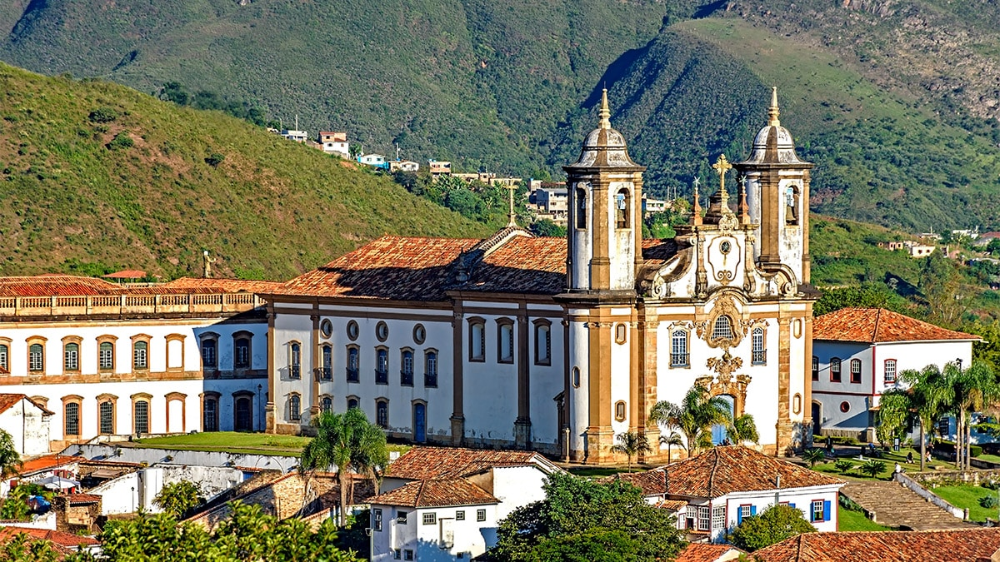

O Patrimônio Histórico Brasileiro
O Brasil, com seus mais de 500 anos de história documentada, abriga um rico patrimônio arquitetônico e cultural que conta a trajetória de formação da nossa nação. As cidades históricas brasileiras são verdadeiros museus a céu aberto, onde cada rua, igreja, casarão e praça guarda memórias de diferentes períodos e influências que moldaram nossa identidade.
Distribuídas por todas as regiões do país, estas cidades preservam características únicas que refletem os ciclos econômicos e sociais pelos quais o Brasil passou ao longo dos séculos. Do ciclo do ouro em Minas Gerais à cultura açucareira no Nordeste, da influência portuguesa no litoral à presença jesuítica no Sul, cada localidade oferece aos visitantes uma perspectiva diferente sobre nossa história.
Nesta seção do Mundo Viajante, convidamos você a conhecer algumas das mais fascinantes cidades históricas brasileiras, suas peculiaridades arquitetônicas, manifestações culturais, gastronomia típica e dicas práticas para aproveitar ao máximo cada destino. Prepare-se para uma viagem no tempo, onde o passado e o presente se encontram em harmonia, criando experiências inesquecíveis.
Minas Gerais: O Coração do Brasil Colonial
Minas Gerais concentra o maior conjunto de cidades históricas do Brasil, fruto do intenso ciclo do ouro e diamantes que transformou a região nos séculos XVII e XVIII. Ouro Preto, primeira cidade brasileira a receber o título de Patrimônio Cultural da Humanidade pela UNESCO, é o exemplo mais emblemático deste período, com seu impressionante conjunto arquitetônico barroco.
Caminhando pelas ruas íngremes e calçadas de pedra de Ouro Preto, o visitante se depara com obras-primas como a Igreja de São Francisco de Assis, projetada pelo genial Aleijadinho, e o Museu da Inconfidência, instalado na antiga Casa de Câmara e Cadeia. A cidade respira arte e história, sendo palco de importantes manifestações culturais como a Semana Santa e o Festival de Inverno, que atraem turistas de todo o mundo.
Não muito distante, Tiradentes encanta por seu conjunto arquitetônico perfeitamente preservado e pela atmosfera bucólica que convida à contemplação. A Matriz de Santo Antônio, com seu interior ricamente ornamentado em ouro, e a vista panorâmica a partir do alto da Serra de São José são apenas algumas das atrações que fazem desta pequena cidade um destino imperdível.
Diamantina, berço do presidente Juscelino Kubitschek, preserva em suas construções e tradições a memória do ciclo dos diamantes. O Mercado Velho, a Casa de Chica da Silva e o Vesúgio, mirante natural de onde se tem uma vista privilegiada da cidade, são pontos que não podem faltar no roteiro dos visitantes. A música também é parte fundamental da identidade diamantinense, com as serestas noturnas animando as ruas do centro histórico.
Bahia: Onde o Brasil Começou
A Bahia, primeiro ponto de chegada dos portugueses em 1500, abriga cidades históricas que testemunharam o início da colonização brasileira. Salvador, primeira capital do Brasil, impressiona pela grandiosidade de seu patrimônio arquitetônico, especialmente no Pelourinho, centro histórico reconhecido como Patrimônio da Humanidade.
No Pelourinho, igrejas barrocas cobertas de ouro, como a de São Francisco, contrastam com casarões coloridos que hoje abrigam restaurantes, galerias de arte e centros culturais. A forte presença da cultura afro-brasileira se manifesta na música, na dança, na religiosidade e na gastronomia, criando uma atmosfera vibrante e única que encanta os visitantes.
No interior baiano, Cachoeira e São Félix, às margens do Rio Paraguaçu, formam um conjunto histórico que remete ao período áureo da produção de fumo e açúcar na região. A Festa da Boa Morte, celebração que mescla elementos católicos e do candomblé, é um dos eventos mais significativos do calendário cultural brasileiro, atraindo pesquisadores e turistas interessados nas tradições afro-brasileiras.
Lençóis, porta de entrada para a Chapada Diamantina, preserva em sua arquitetura a memória do ciclo dos diamantes que transformou a região no século XIX. Casarões senhoriais, a antiga Casa de Lapidação e o Mercado Municipal contam a história de um período de riqueza e transformações sociais, enquanto as belezas naturais do entorno complementam a experiência dos visitantes.
Pernambuco e Alagoas: Tesouros do Nordeste
No Nordeste brasileiro, Olinda se destaca como um dos mais importantes conjuntos arquitetônicos coloniais do país. Fundada em 1535, a cidade preserva igrejas, conventos e casarões que remontam aos séculos XVI, XVII e XVIII, dispostos sobre colinas que oferecem vistas deslumbrantes do oceano Atlântico.
Além da arquitetura, Olinda é conhecida por sua efervescência cultural, sendo berço de importantes movimentos artísticos e sede de um dos carnavais mais autênticos do Brasil. O Alto da Sé, com a Catedral e o mirante, e o Mosteiro de São Bento são pontos imperdíveis para quem visita esta cidade que respira arte e história.
Em Alagoas, Penedo surpreende os visitantes com seu conjunto arquitetônico às margens do Rio São Francisco. Fundada em 1565, a cidade preserva construções que refletem diferentes períodos da história brasileira, desde o colonial até o neoclássico. O Convento e Igreja Franciscana de Nossa Senhora dos Anjos, com seus azulejos portugueses e pinturas sacras, é uma das joias da arquitetura religiosa do Nordeste.
A influência holandesa também deixou marcas no Nordeste, especialmente em Igarassu, Pernambuco, onde se encontra a Igreja dos Santos Cosme e Damião, considerada a mais antiga do Brasil ainda em funcionamento. O centro histórico, com suas construções coloniais e o Museu Histórico, preserva a memória dos primeiros anos da colonização brasileira.
Goiás e Tocantins: O Brasil Central
No coração do Brasil, a Cidade de Goiás, antiga Vila Boa e primeira capital do estado, mantém viva a memória do ciclo do ouro que impulsionou a ocupação do Brasil Central no século XVIII. O traçado urbano original, adaptado à topografia acidentada, e construções como o Palácio Conde dos Arcos, a Casa de Cora Coralina e a Igreja da Boa Morte formam um conjunto harmonioso reconhecido pela UNESCO.
A cidade é também conhecida por suas tradições culturais, como a Procissão do Fogaréu durante a Semana Santa, quando encapuzados percorrem as ruas iluminadas apenas por tochas, em uma representação da busca por Cristo. A gastronomia local, com pratos como o empadão goiano e o pequi, complementa a experiência dos visitantes, oferecendo sabores únicos da culinária do cerrado.
Em Tocantins, Natividade preserva um importante conjunto arquitetônico do ciclo do ouro, com destaque para a Igreja de Nossa Senhora da Natividade e as ruínas da Igreja de São Benedito. A tradição da ourivesaria permanece viva na cidade, com artesãos locais produzindo joias em filigrana de ouro segundo técnicas transmitidas por gerações.
Pirenópolis, em Goiás, encanta não apenas por seu conjunto arquitetônico colonial, mas também pelas manifestações culturais como as Cavalhadas, representação da luta entre mouros e cristãos que ocorre durante as Festas do Divino. As cachoeiras nos arredores da cidade oferecem momentos de lazer e contato com a natureza, complementando a experiência histórica e cultural.
Sul e Sudeste: Diversidade Cultural
No litoral de São Paulo e Rio de Janeiro, cidades como Paraty e São Luiz do Paraitinga preservam importantes conjuntos arquitetônicos que remontam aos períodos colonial e imperial. Paraty, com seu centro histórico perfeitamente preservado e livre de automóveis, transporta os visitantes a um Brasil de séculos atrás, enquanto o entorno de mata atlântica e praias paradisíacas complementa a experiência.
A cidade é palco de importantes eventos culturais, como a FLIP (Festa Literária Internacional de Paraty) e o Festival da Cachaça, que celebram respectivamente a literatura e a tradicional produção de aguardente da região. A gastronomia local, com forte influência caiçara, oferece pratos à base de frutos do mar que são verdadeiras delícias para os visitantes.
No Sul do Brasil, as Missões Jesuíticas representam um capítulo único da história brasileira. São Miguel das Missões, no Rio Grande do Sul, preserva as ruínas da redução jesuítica de São Miguel Arcanjo, Patrimônio Mundial pela UNESCO. O espetáculo de som e luz que ocorre todas as noites nas ruínas narra a história dos guaranis e jesuítas que ali viveram, em uma experiência emocionante.
Antônio Prado, também no Rio Grande do Sul, destaca-se pela preservação da arquitetura e cultura dos imigrantes italianos que colonizaram a região a partir do final do século XIX. As casas de madeira, construídas segundo técnicas trazidas do norte da Itália, formam o maior acervo arquitetônico deste tipo no Brasil, contando a história de famílias que deixaram sua terra natal em busca de novas oportunidades.
Dicas para Explorar as Cidades Históricas
Para garantir que sua experiência nas cidades históricas brasileiras seja enriquecedora e prazerosa, compartilhamos algumas dicas valiosas:
Reserve tempo suficiente para cada destino. As cidades históricas merecem ser exploradas com calma, permitindo que você absorva a atmosfera local, visite os museus e monumentos sem pressa e participe das manifestações culturais. Dependendo do tamanho e da quantidade de atrações, uma cidade pode exigir de dois a quatro dias para ser conhecida adequadamente.
Contrate guias locais. Os guias de turismo das cidades históricas são verdadeiros guardiões da memória local, conhecendo não apenas os fatos históricos, mas também as lendas, curiosidades e personagens que dão vida às pedras antigas. Uma visita guiada enriquece enormemente a experiência, revelando detalhes que passariam despercebidos ao visitante comum.
Respeite o patrimônio. As construções históricas são frágeis e insubstituíveis, por isso é fundamental seguir as orientações de visitação, não tocar em obras de arte, não utilizar flash em fotografias quando não permitido e não retirar qualquer elemento como "lembrança". Lembre-se que preservar este patrimônio é responsabilidade de todos.
Experimente a gastronomia local. Cada região do Brasil desenvolveu uma culinária própria, influenciada pelos ingredientes disponíveis e pelas tradições dos povos que ali se estabeleceram. Nas cidades históricas, muitos restaurantes servem pratos tradicionais preparados segundo receitas centenárias, oferecendo uma verdadeira viagem gastronômica pelo Brasil de antigamente.
Participe das festas tradicionais. Muitas cidades históricas mantêm vivas celebrações religiosas e folclóricas que remontam ao período colonial. Estas festas, como a Semana Santa em Ouro Preto, o Círio de Nazaré em Belém ou as Cavalhadas em Pirenópolis, são oportunidades únicas de vivenciar tradições centenárias e compreender a alma do Brasil profundo.
Conclusão
As cidades históricas brasileiras representam um patrimônio cultural de valor inestimável, oferecendo aos viajantes a oportunidade de conhecer as raízes da nossa identidade nacional. Ao percorrer suas ruas, visitar seus monumentos e participar de suas manifestações culturais, somos convidados a refletir sobre o passado que moldou o Brasil contemporâneo e a valorizar a diversidade que nos caracteriza como nação.
No Mundo Viajante, acreditamos que conhecer estas cidades é também uma forma de contribuir para sua preservação, pois o turismo consciente gera recursos que podem ser investidos na manutenção do patrimônio e no fortalecimento das tradições locais. Por isso, incentivamos sempre o respeito às comunidades, seus costumes e seu legado histórico.
Esperamos que este guia inspire você a explorar as maravilhosas cidades históricas brasileiras, descobrindo a diversidade e a riqueza cultural que fazem do nosso país um destino único no mundo. E lembre-se: cada cidade tem sua personalidade e encantos próprios, convidando-nos a uma nova descoberta a cada visita.